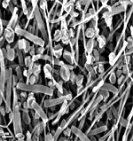

Archaea Classification
Archaea, as a domain of life, is classified into several phyla, with Euryarchaeota and Crenarchaeota being the most well-recognized. Other phyla, like Nanoarchaeota and Korarchaeota, are also proposed but not fully established due to limited evidence.
1.Euryarchaeota phylum:

Euryarchaeota is a phylum within the domain Archaea, a group of microorganisms that are prokaryotic and distinct from bacteria and eukaryotes. It is a diverse phylum, with members found in a wide range of environments, including extreme habitats.
Key features of Euryarchaeota phylum:
- Specialized cell membrane:
The cell membrane of Euryarchaeota is made up of ether-linked molecules of glycerol and fatty acids, which is different from bacteria.
- Lack of cell wall peptidoglycan:
Unlike bacteria, archaea lack the peptidoglycan found in their cell walls.
- Habitat:
Euryarchaeota can be found in various environments, including soil, sediments, intestines, anoxic sediments, and sludge digesters.
- Halophily:
Some Euryarchaeota are halophilic, meaning they thrive in high salt concentrations, and are found in environments like salt lakes.
- Thermophily:
Many Euryarchaeota are thermophiles, meaning they can survive at high temperatures.
2.Crenarchaeota phylum:

Crenarchaeota is a phylum within the Archaea domain, encompassing a diverse group of archaea, including both thermophilic and cold-dwelling organisms. The name "Crenarchaeota" refers to the organisms initially isolated from hot, geothermal springs, and they are now known to be abundant in various environments, including soils and oceans.
Key features of Crenarchaeota phylum:
- Phylogenetic relationships:
Crenarchaeota is closely related to the Thaumarchaeota, which were previously considered a subset of Crenarchaeota. Both phyla are part of the TACK superphylum.
- Abundance in various environments:
While originally thought to be extremophiles, Crenarchaeota are now recognized as abundant in various habitats, including soils, oceans, and freshwater sediments.
- Metabolic diversity:
Crenarchaeota utilize a variety of electron donors and acceptors for energy generation, including sulfur, hydrogen, and organic compounds.
- Acidophilic:
Many Crenarchaeota are also acidophilic, tolerating low pH environments.
- Thermophilic:
Many Crenarchaeota are thermophilic, thriving in hot environments, with some, like those in the genus Pyrolobus, capable of growing at very high temperatures, even exceeding 100°C.
3.Nanoarchaeota :

Nanoarchaeota are a phylum of very small, parasitic archaea known for their intimate association with archaeal hosts, particularly Ignicoccus.
They are characterized by their small size (around 0.35-0.5 micrometers), highly reduced genomes, and limited metabolic capabilities, indicating a parasitic or symbiotic lifestyle where they likely obtain many essential molecules from their host.
Key features of Nanoarchaeota:
- PhylogeneticSmall Size:
Nanoarchaeota are among the smallest known microorganisms, with cell diameters typically ranging from 0.4 to 1 micron.
- Reduced Genome:
Their genomes are significantly smaller than most other archaea and bacteria, ranging from 0.491 to 0.606 Mbp.
- Host-Dependent Lifestyle:
Nanoarchaeota lack genes for many core cellular functions, including lipid, amino acid, and nucleotide biosyntheses. They likely obtain many essential molecules from their host, Ignicoccus.
- Obligate Symbionts/Parasites:
They are thought to be obligate symbionts or parasites, growing and dividing on the surface of their host, Ignicoccus.
- Unique Metabolic Features:
Despite their small size and reduced genome, they possess unusual metabolic features, including the ability to perform gluconeogenesis and potentially utilizing other pathways.
4.Korarchaeota :

Korarchaeota are a deep-branching group of archaea often found in extreme environments, particularly hydrothermal vents and hot springs. They are known to be thermophilic, thriving in high-temperature conditions. Additionally, they are often found in acidic environments and are believed to be anaerobic, meaning they thrive without oxygen.
Key features of Korarchaeota:
- Hot springs:
These terrestrial thermal areas provide another environment where Korarchaeota are often found, along with other extremophiles.
- Hydrothermal vents:
These vents are a common habitat for Korarchaeota, providing a rich source of chemicals and energy for their metabolism.
- Anaerobic:
They are believed to be obligate anaerobes, meaning they cannot survive in the presence of oxygen.
- Acidophilic:
While they've been found in various pH levels, Korarchaeota have often been observed in acidic conditions, particularly in hot springs and mudpots.
- Thermophilic:
Korarchaeota are known for their ability to survive and thrive in extremely hot environments, including terrestrial hot springs and submarine hydrothermal vents.
5.Lokiarchaeota phylum:

Lokiarchaeota is a phylum of Archaea, a domain of prokaryotic organisms, that is considered a close relative of eukaryotes. It was discovered in 2015 from metagenomic data collected in deep-sea sediments and is named after Loki's Castle, a hydrothermal vent field in the Arctic Ocean where the sample was taken. Lokiarchaeota is significant because of its potential role in the evolution of eukaryotic cells, and its study could offer insights into the transition from prokaryotes to eukaryotes.
Key features of Lokiarchaeota phylum:
- Mosaic genome:
Lokiarchaeota genomes exhibit a mosaic structure, with genes from bacterial, archaeal, and even eukaryotic origins.
- Potential for understanding the transition:
Studying Lokiarchaeota could help scientists understand how eukaryotic cells evolved from prokaryotic ancestors.
- Eukaryotic evolution:
Lokiarchaeota is believed to have genes related to cell membrane and cytoskeleton function, suggesting it might have contributed to the development of eukaryotic cell structures.
- Phylogenetic relationship:
It is a close relative of eukaryotes, indicating it could be a key player in the evolution of eukaryotic cells.
- Discovery:
Lokiarchaeota was first identified through metagenomic analysis of a sample collected from deep-sea sediments at Loki's Castle.